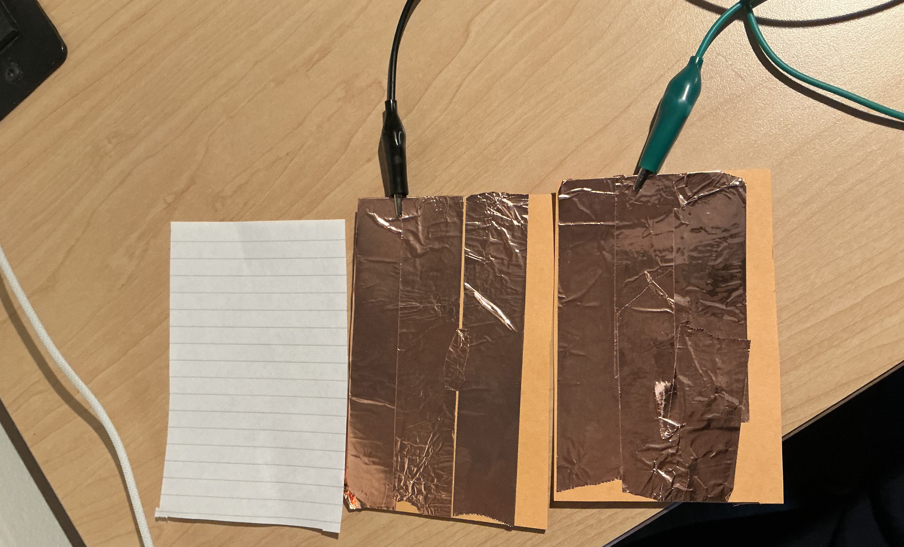
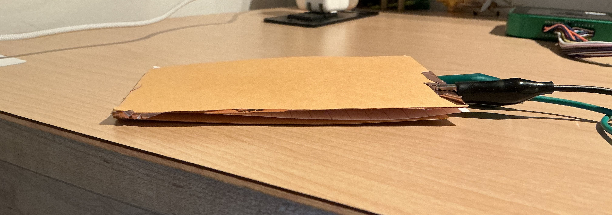

DIY Touch Sensor
Completed Circuit
Remember the conceptual question in Lab 1? It really sounded like a good challenge to take on: build a touch sensor out of what I've learned so far on the course. Here's what I made, and I will walk you through my reasoning and implementation.
Demo Video
Working demonstration of the touch sensor circuit
Theory First
τ = RC
Remember this formula? It tells us that an RC circuit's time constant depends on resistance and capacitance. In Lab 1, we demonstrated that we could detect this change using an oscilloscope. So, if I find a way to alter this time constant slightly, I should be able to measure the change—potentially indicating when the touch sensor has been activated.
Alright, but how do I change the time constant? Resistance depends on material properties, so I don't see an obvious way to modify it. However, as we saw in lecture, capacitance is purely a geometric parameter. According to the geometric formula, if I change the distance between the plates of a capacitor, that should result in the variation we're looking for.
So, the concept is simple—every time I press on one plate of a capacitor, the distance between the plates changes slightly, which in turn alters the capacitance. Eureka!
Actually building stuff
Now, all that's left is to build a homemade capacitor using two copper plates and a sheet of paper as the dielectric in the middle. We can also use the capacitance's geometric formula to find our capacitor's capacitance. Mine is around 73 pF.
It sounds simple, but if you really think about it, capacitors are this simple.

Complete circuit setup with Arduino and components

Touch sensor responding to input with LED indicator
Implementation Details
When applying a square wave signal to an RC circuit built with our homemade capacitor and observing it on an oscilloscope, we'll see the characteristic charging and discharging behavior of the capacitor. When pressing the plates of the capacitor we can clearly see the increase in discharge time.
Key Components
- Digital Pin (Arduino): Acts as a pulse generator
- Resistor R=1MΩ: Controls the charging time
- Capacitor Ch: Represents the inherent capacitance of the breadboard
- Capacitor Cb: Our DIY capacitor
- Analog Pin (Arduino Input): Reads the voltage across the capacitor
Operation Sequence
- The capacitor is charged by setting the digital pin HIGH for a short time
- The capacitor is then discharged, and the Arduino starts measuring time using an analog pin
- The loop waits until the analog reading drops below 0.37 percent of the original voltage threshold
- The elapsed time (microseconds) is printed to the Serial Monitor
- If the elapsed time is bigger than a certain threshold, we turn the LED on
Conclusion
That's it! We just made a touch sensor. More ways we could have approached our capacitive sensor are using our body's internal capacitance as the second plate of our DIY cap or placing cap plates and using our finger to disrupt the electric field. Finally, what we've just built is not very far from how actual touchscreens work.